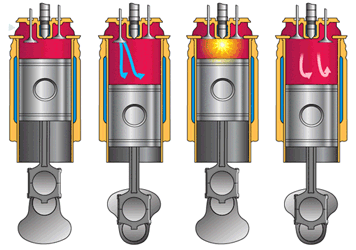

The overall goal of tuning a manifold is to increase power and/or efficiency for a particular engine design. As mentioned before, one method to increase those parameters is by supplying enough air to maximize the combustion reaction so that all of the fuel that is supplied undergoes combustion. To evaluate whether the amount of air supplied to the engine is enough to achieve this maximum combustion, a ratio of performance called volumetric efficiency is utilized. The volumetric efficiency is defined as the ratio of actual air supplied to the engine versus the air required by the engine to achieve maximum combustion. There are four main factors affecting volumetric efficiency: fuel mixing, heat transfer, valve overlap and timing, and fluid friction loss. Figure 1 shows a curve relating engine rpm to volumetric efficiency.
Figure 1: Volumetric Efficiency Vs. Engine RPM
Factors Effecting Volumetric Efficiency
Fuel Mixing
Fuel mixing can be described as the process where air and fuel are mixed to the appropriate ratio to provide a combustion reaction. Engine design dictates where in the combustion cycle fuel is added to the inflow of air being drawn into the engine. Sometimes the fuel is added upstream, within the manifold itself, or it can be added directly into the cylinder. When fuel is added upstream, it is allowed more time to evaporate, and when fuel evaporates too early it displaces air which decreases the volumetric efficiency. To counter this effect, long and narrow runners (tubes that connect the main reservoir of the manifold to each individual cylinder) must be used. When fuel is added directly into the cylinder, it doesn’t require a high velocity and turbulence to induce proper mixing. Also, an increased diameter runner can be used, which increases volumetric efficiency.
Heat Transfer
During the intake process, heat transfer occurs between the air inside the manifold, the walls of the manifold, and the ambient air within the engine bay. When the engine is under a heavy load or at high rpm’s, the temperatures in the engine bay can be much higher than that of the air inside the manifold, but the air is moving through the manifold at a higher rate, so the volumetric efficiency is largely unaffected. At low rpm’s though, the air stays in the intake for longer which leads to an increase in air temperature and signifies a lower volumetric efficiency. To counteract this effect, some engine designs inject water into the intake during idle to cool the air.
Valve Timing
The timing of the engine determines what intervals in the combustion cycle that each valve is open. The timing of an engine is typically controlled by a camshaft that is synchronized with the rotation of the crankshaft. When the piston is moving from top dead center (TDC) to bottom dead center (BDC), a vacuum is created in the cylinder, which draws the air in. Initially the intake air is at a higher pressure than the air in the cylinder, and air will enter the cylinder until those pressures equalize. The optimum time that the intake valve should close has been determined empirically to be when Ppiston is equal to Pintake. However, during the combustion cycle there is often a brief moment at the end of the exhaust stroke and the beginning of the intake stroke where both the intake and exhaust valves are both open. When this occurs there is a small remaining bit of exhaust that mixes and displaces the incoming fresh/mixed air. This effect is most prominent at low engine speeds when the time that the two valves are both open is longest.

Fluid Friction
Air moving past flow restrictions causes a pressure drop. This adverse dressure drop leads to less air flowing into cylinder. This is caused by viscous drag which increases with velocity causing pressure loss. This effect is most evident volumetric efficiency at high RPM. The faster the piston is moving the more obvious the effects of friction are.